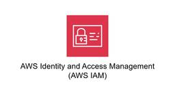
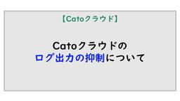
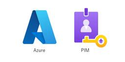

TechHarmony
https://blog.usize-tech.com
TechHarmonyは、SCSK株式会社が運営するエンジニアブログです。SCSKのエンジニア自らがクラウドを中心としたナレッジを積極的にアウトプットすることで社会への還元を行うとともに、更なるスキルアップを目指します。
フィード

【後編】CatoクラウドのLink Health Rules活用法 ～Quality Health Rules～
TechHarmony
本記事は TechHarmony Advent Calendar 2025 12/13付の記事です。 こんにちは。廣木です。 本記事はLink Health Rules活用法の後編です。 「Quality Health […]
15時間前

接続元IPアドレス制限されたIAMユーザが操作中に別IPアドレスになった場合
TechHarmony
こんにちは。SCSKの谷です。 AWSへのアクセスを社内からのみに制限する際などに用いられる方法の一つとして、IAMポリシーでの接続元IPアドレス制限があります。 では、社内でAWSへアクセスしたIAMユーザがそのままP […]
1日前

AntigravityとGemini 3でアプリ開発したら、めちゃくちゃ効率的だった話
TechHarmony
AIこんにちは。SCSKの松渕です。 先日、発表されたばかりのGoogle Antigravityをインストール＆簡易WEBサイト構築してみましたが、 今回はもう少しアプリ開発をしてみた実体験をブログに書きます！ はじめ […]
1日前
【Cato Networks】X1600 LTEモデル実機レビュー！設定方法からユースケースまで徹底解説
TechHarmony
本記事は TechHarmony Advent Calendar 2025 12/12付の記事です。 こんにちは。SCSK 中山です。 今回はX1600 LTEモデル を実際に触る機会がありましたので、その詳細なレビュー […]
2日前

Catoクラウドのログ出力の抑制について
TechHarmony
本記事は TechHarmony Advent Calendar 2025 12/11付の記事です。 ログ出力の抑制の必要性 Cato クラウドでは、提供されるネットワークやセキュリティ機能の様々なログが […]
3日前

【New Relic】エージェント導入前に知っておくべき設定鍵の種類と役割
TechHarmony
こんにちは。SCSKの井上です。 New Relicを導入する際には、いくつかの鍵を正しく設定する必要があります。この記事では、ライセンスキーとユーザーキーの概要、用途、発行手順、そしてセキュリティを確保するための管理方 […]
3日前
【Catoクラウド】AWS vSocket HA構成の構築手順を解説
TechHarmony
本記事は TechHarmony Advent Calendar 2025 12/10付の記事です。 こんにちは！ Catoクラウド担当、佐藤です。 以前、AWSのvSocket構築手順を解説したブログを作成しました。 […]
4日前

【ServiceNow】バージョンアップ期限に間に合わない！？ServiceNowにバージョンアップの延長をお願いする
TechHarmony
こんにちは。SCSKの星です。 今回はServiceNowのバージョンアップ期限に間に合わない場合の対応方法について書いていきます。 はじめに（注意） バージョンアップには期限があります。基本的には期限内に終わらせること […]
5日前

AWS re:Invent 2025現地参加レポート 〜帰国・振り返り編〜
TechHarmony
こんにちは、ひるたんぬです。 この度「AWS re:Invent 2025」に参加できることになりましたので、現地での出来事や参加したセッションについてのレポートをお送りしたいと思います！ 今回は、帰国の路と振り返りをし […]
5日前
【Catoクラウド】Advanced Groupとは何なのか？
TechHarmony
本記事は TechHarmony Advent Calendar 2025 12/9付の記事です。 Catoクラウドの管理機能「Advanced Groups」について紹介します。 はじめに：GroupsとAdvance […]
5日前

【Azure】Microsoft Entra PIM で権限管理（管理者編）
TechHarmony
前にEligible user(有資格者)側としてPIMを利用していました。 【Azure】Microsoft Entra PIM で権限管理（有資格者編）Microsoft Entra Privileged Ident […]
5日前

Snowflake Intelligenceで始める生成AI活用 ― SCSKが伴走します
TechHarmony
こんにちは、SCSK斉藤です🐧 2025年11月にSnowflake Intelligenceがついに一般提供(GA)になりました。こちらは生成AIを利用して自然言語によるデータ検索や要約を可能にしてくれるインテリジェン […]
6日前

Raspberry Piで気温/気圧/湿度計測 結果をWebサーバで見てみよう
TechHarmony
SCSK いわいです。 前回からだいぶ間が空いてしまいましたが、今回はRaspberry Pi 5で気温/気圧/湿度センサーを使って測定し、 Webで表示するシステムを構築したいと思います。 DBに取得データを格納し、あ […]
6日前

オフライン環境でZabbix 7.0 LTSをインストールしてみた
TechHarmony
本記事は TechHarmony Advent Calendar 2025 12/8付の記事です。 こんにちは、SCSK株式会社の中野です。 Zabbixは、システム監視・運用に欠かせないオープンソースの監視ツールです。 […]
6日前
Zabbix Conference Japan 2025 発表内容と Zabbix 8.0 ロードマップ
TechHarmony
本記事は TechHarmony Advent Calendar 2025 12/7付の記事です。 こんにちは！SCSKの安藤です。 毎年恒例、TechHarmonyのアドベントカレンダー企画です！🎉🎉🎉 今年は、前半の […]
7日前
Zabbix APIを使って、監視データを送信してみよう(history.push編)
TechHarmony
本記事は TechHarmony Advent Calendar 2025 12/6付の記事です。 皆さん、師走のZabbixライフを満喫していますか？こんにちは、SCSK株式会社 片井です。 今回はZabbixLTS […]
8日前
AWS re:Invent 2025現地参加レポート 〜Day 5〜
TechHarmony
こんにちは、ひるたんぬです。 この度「AWS re:Invent 2025」に参加できることになりましたので、現地での出来事や参加したセッションについてのレポートをお送りしたいと思います！ 今回は、最終日の出来事を振り返 […]
8日前

AWS re:Invent 2025現地参加レポート 〜Day 4〜
TechHarmony
こんにちは、ひるたんぬです。 この度「AWS re:Invent 2025」に参加できることになりましたので、現地での出来事や参加したセッションについてのレポートをお送りしたいと思います！ 今回は、四日目の出来事を振り返 […]
8日前
Zabbix×AIによる画像監視の可能性 ― サンタクロース検知から学ぶ次世代オブザーバビリティ
TechHarmony
本記事は TechHarmony Advent Calendar 2025 12/5付の記事です。 メリークリスマス、SCSK株式会社の小寺崇仁です。 （今回はAIを使ってブログ記事を作成しています） 近年、監視ツールの […]
9日前
AWS re:Invent 2025現地参加レポート 〜Day 3〜
TechHarmony
こんにちは、ひるたんぬです。 この度「AWS re:Invent 2025」に参加できることになりましたので、現地での出来事や参加したセッションについてのレポートをお送りしたいと思います！ 今回は、三日目の出来事を振り返 […]
9日前
【初心者向け】PowershellからAmazon FSxボリュームシャドーコピーを有効化してみた！
TechHarmony
こんにちは！2年目の秋葉です！ 入社2年目でまだまだ勉強中ですが、最近業務で「Amazon FSx for Windows File Server（以下FSx）」を触る機会がありました。 その中で、“PowerShell […]
9日前
Ansibleを使用してNW機器設定を自動化する（PaloAlto-サービスグループ編②）
TechHarmony
当記事は、前回の記事「Ansibleを使用してNW機器設定を自動化する（PaloAlto-サービスグループ編①）」からの改善となります。 設定情報がベタ書きで使い勝手が悪い点 を 設定情報をまとめてINPUT（JSON） […]
9日前
Google Antigravity × Gemini 3でCloud Runデプロイまで自律完結！
TechHarmony
こんにちは。SCSKの松渕です。 2025年11月19日、Gemini 3がリリースされましたね！それと同時にIDEであるAntigravityの発表もされました！ 今回は、AntigravityとGemini 3を利用 […]
9日前
【New Relic】New Relicでユーザーを作成する方法
TechHarmony
こんにちは。SCSKの井上です。 この記事では、New Relicにおけるユーザー作成の手順や注意点について解説していきます。この記事で、New Relicの運用をより安全かつ効率的に行えるようになることを目指します。 […]
9日前
【Zabbix】保存前処理まとめ -テキスト編-
TechHarmony
本記事は TechHarmony Advent Calendar 2025 12/4付の記事です。 こんにちは、アドベントカレンダー第4走者の坂木です。 本記事では、保存前処理の中でもテキストデータの加工処理に焦点を当て […]
10日前
AWS re:Invent 2025現地参加レポート 〜Day 2〜
TechHarmony
こんにちは、ひるたんぬです。 この度「AWS re:Invent 2025」に参加できることになりましたので、現地での出来事や参加したセッションについてのレポートをお送りしたいと思います！ 今回は、二日目の出来事を振り返 […]
10日前
Zabbixの監視テンプレート Tips
TechHarmony
本記事は TechHarmony Advent Calendar 2025 12/3付の記事です。 こんにちは。SCSKの曽我です。 Zabbixの監視テンプレートを作るの大変と思われている方に送るTipsです。 テンプ […]
11日前
AWS re:Invent 2025現地参加レポート 〜Day 1〜
TechHarmony
こんにちは、ひるたんぬです。 この度「AWS re:Invent 2025」に参加できることになりましたので、現地での出来事や参加したセッションについてのレポートをお送りしたいと思います！ 今回は、初日の出来事を振り返り […]
11日前
【AWS】re:Invent を量子で解読したい・・・！
TechHarmony
本記事は TechHarmony Advent Calendar 2025 12/2付の記事です。 こんにちは、クラウドサービス関連の業務をしている藪内です。 本記事では、AWS 最大規模のイベント「re:Invent」 […]
12日前
Zabbix仮想Applianceで監視サーバー立ち上げてみた
TechHarmony
本記事は TechHarmony Advent Calendar 2025 12/2付の記事です。 こんにちは！SCSKの新沼です。 「システム監視を始めたいけど、Zabbixの環境構築ってなんだか難しそう…」 「Lin […]
12日前
AWS re:Invent 2025現地参加レポート 〜事前準備・到着編〜
TechHarmony
こんにちは、ひるたんぬです。 この度「AWS re:Invent 2025」に参加できることになりましたので、現地での出来事や参加したセッションについてのレポートをお送りしたいと思います！ 今回は、私が初回参加ということ […]
12日前
災害対策に！LifeKeeperを使ったAzureクロスリージョンHAクラスタについて
TechHarmony
こんにちは。SCSKの津田です。 今回は、LifeKeeperによるAzureのリージョンを跨いだHAクラスター構成についてご紹介いたします。 はじめに 昨今の自然災害の増加に伴い、AWSやAzureといったパブリックク […]
12日前
MackerelでAzure環境を監視してみた！
TechHarmony
こんにちは、SCSK株式会社3年目の愛甲です。 前回、私たちの部署の嶋谷さんが、MackerelのMCPサーバーに触れてみた という記事を掲載しました。 この記事の内容は、運用に携わっている人からすると、 とても興味深い […]
12日前
【リソース起動・フェイルオーバー失敗の深層 #2】ファイルシステムの思わぬ落とし穴：エラーコードから原因を読み解く
TechHarmony
LifeKeeperの『困った』を『できた！』に変える！サポート事例から学ぶトラブルシューティング＆再発防止策 こんにちは、SCSKの前田です。 いつも TechHarmony をご覧いただきありがとうございます。 Li […]
12日前
迅速な障害発見を手助け！Zabbixの障害をTeamsに通知する方法
TechHarmony
本記事は TechHarmony Advent Calendar 2025 12/1付の記事です。 こんにちは。SCSK株式会社の上田です。 毎年恒例、TechHarmonyのアドベントカレンダー企画が始まりました！🎉🎉 […]
13日前
Cortex Cloudでアラートのステータスを変更してみた
TechHarmony
はじめに 前回はCortex CloudをAWSに接続し、アラートを取得しました。 今回はそのアラートに相当するCaseとIssueのステータスの変更をしてみようと思います。 CaseとIssueについて Cortex […]
15日前
【Catoクラウド】Socketのゼロタッチ対応が進化しました！
TechHarmony
Catoクラウドへ接続するための専用デバイスであるCato Socketについて、 初期設定にまつわる新機能が実装されました。本記事では、その紹介を行います。 はじめに：Cato Socketと初期設定 Catoクラウド […]
16日前
LifeKeeper導入後の保守サポートってどういう仕組み？を解説します
TechHarmony
(※本記事は、2025年11月時点の内容となります) LifeKeeperでは、製品購入後に充実した保守サポートをご提供していますが、 導入したOSやバージョンにより、サポートの種類や期間が異なるため、 複雑でどれを選べ […]
16日前
Postgresqlのバキューム処理
TechHarmony
こんにちわ、田原です。 お客様対応でpostgresqlのバキューム処理について調査する機会があり、 まとめましたので、内容を紹介します。 なぜpostgresqlにバキューム処理が必要なのか postgresqlには以 […]
16日前
【PostgreSQL】INDEX ONLY SCAN について
TechHarmony
こんにちは、石原です。 最近、PostgreSQL で実行計画を見る機会が多かったため、そこから気になった内容について記載していこうと思います。 今回は「INDEX ONLY SCAN」について触れていきます。 ※本内容 […]
16日前
Azure Monitor Agent (AMA) 導入時におけるプロビジョニング失敗の対処法（Windows イメージ展開環境）
TechHarmony
大西です。 Azure virtual Desktop（AVD）を用いてシンクライアント環境を構築している際に、 各セッションホストへAzure Monitor Agent（AMA）の導入が正常に完了せず、 Window […]
16日前
【New Relic】New Relicのログイン方法とユーザー設定
TechHarmony
こんにちは。New Relic技術担当の井上です。 この記事ではNew Relicへのログイン方法と作成したユーザーの権限変更やプロフィール情報変更について解説していきます。同じメールアドレスでNew Relicのアカウ […]
17日前
Azure VM – Azure Storageサービスを使用しないAzure Bastion 経由でのファイル転送方法 –
TechHarmony
リソース構築をする中でBastion経由でVMへ接続することがありますが、ポータル上からのBastion接続では通常、ファイル転送をすることができません。私自身VMへアプリケーションを導入する際に、ローカルPCからVMへ […]
17日前
【ServiceNow】画像データを環境間で移送する方法（XMLエクスポート/インポート）
TechHarmony
こんにちは SCSKの庄司です。 今回は、ServiceNowの環境間における画像の移送方法を紹介していきます。 本記事は執筆時点（2025年11月）の情報になります。最新の内容は製品ドキュメントを参考にしてください。 […]
17日前
話題のAIコードドキュメント「DeepWiki」とは？使い方と日本語化の手順を徹底解説
TechHarmony
こんにちは。SCSKの松渕です。 半年ほど前から、エンジニア界隈のSNSや技術ブログで「DeepWiki」という名前を見かけることが増えていませんか？ この記事では、「Deepwikiって結局何がすごいの？」「どうやって […]
23日前
AWS CloudFormationスタックの出力をAnsibleで取得し、アプリに渡す方法
TechHarmony
初めまして。2025年にSCSKに入社した新人の大原悠利と申します。現在、所属部署の伝統であるクラウド研修に参加しています。 今回はその研修の中で、自分が特に苦戦した「AWS CloudFormationの出力をAnsi […]
24日前
【New Relic】使い始めるためのサインアップガイド
TechHarmony
こんにちは。New Relic技術担当の井上です。 この記事では実際にNew Relicを使う導入ステップとして、New Relicのサインアップ方法について解説していきます。初めてNew Relicを利用される方でもス […]
24日前
ServiceNowのライセンスの考え方(ITOM編)
TechHarmony
はじめまして。こんにちは。SCSKの髙橋です。 ServiceNowのライセンスの考え方が複雑でわからない、と質問いただくことが多いので 今回はITOM（IT Operations Management）について書いてみ […]
24日前
テキストをAmazon SNSで送りたいだけなのに。
TechHarmony
こんにちは、ひるたんぬです。 前回のブログに続き醤油についての話題です。 ※ 最近ふと思いつく小ネタが、たまたま醤油になってしまっているだけです。 「濃口醤油」と「淡口醤油」の違い、皆さんはご存知ですか？ 色が違うという […]
25日前
lkbackupでLifeKeeper構成情報のバックアップとリストアやってみた。
TechHarmony
こんにちは、SCSKの伊藤です。 LifeKeeperで「リソース階層の拡張解除」をしようとしたら、誤って「リソース階層の削除」をしてしまった！ そんな経験はありませんか？ 英語表示では「Unextend Resourc […]
25日前